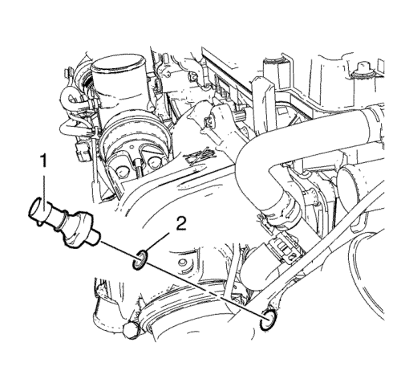
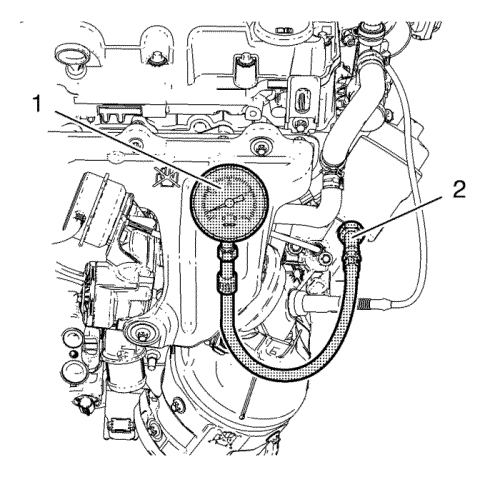

Diagnóstico y comprobación de la presión de aceite — 1.4L LUH y LUJ
Herramientas especiales
| • | EN-498-B Indicador de presión de aceite |
Si desea informarse sobre herramientas regionales equivalentes, consultar Herramientas especiales
Procedimiento de desmontaje
- Desconecte el enchufe del mazo de cables del interruptor del indicador de presión del aceite.

- Desmonte el interruptor del indicador de presión de aceite (1) y el anillo de junta del indicador de presión de aceite (2).
Procedimiento de medición

- Monte el medidor EN-498-B (1) junto con el adaptador EN-498-3 (2).
- Arranque el motor.
Nota: La temperatura del motor debe estar entre 80°C y 100°C.
- Mida la presión del aceite:
| • | La presión de aceite al ralentí debe ser 150 kPa (22 psi). |
| • | La presión del aceite entre 3000 - 3500 rpm debe ser de 380 - 650 kpa (55 - 94 psi). |
- Pare el motor.
- Si la presión de aceite del motor está por debajo de los valores especificados, compruebe que no se presenta ninguna de las siguientes circunstancias en el motor:
| • | Conductos de reparto de aceite agrietados, con poros u obstruidos. |
| • | Avería de la válvula de sobrepresión de aceite |
- Desmonte el medidor EN-498-B y el adaptador EN-498-3.
Procedimiento de montaje
- Monte el interruptor del indicador de presión de aceite y un anillo de junta del indicador de presión de aceite nuevo.
Precaución:Consulte Precaución con las fijaciones en la sección Prólogo.
- Apriete el interruptor del indicador de presión de aceite a 20 N·m (15 lib. pie).
| © Copyright Chevrolet. All rights reserved |